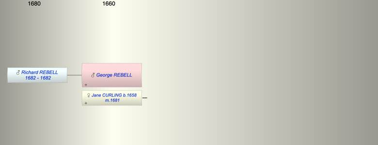

| [Index] |
| George REBELL |
|  |
| m. 17 Nov 1681 Jane CURLING (1658 - ) at St Laurence |
| Children (1): |
| Richard REBELL (1682 - 1682) |
| Events in George REBELL's life | |||||
| Date | Age | Event | Place | Notes | Src |
| 17 Nov 1681 | Married Jane CURLING (aged 23) | St Laurence | Note 1 | ||
| 1682 | Birth of son Richard REBELL | St Laurence | Note 2 | ||
| 1682 | Death of son Richard REBELL | St Laurence | Note 3 | ||
| Note 1: by licence ex FMP PR, his surname may be Kebell |
| Note 2: bap St Laurence 27 Aug 1682 ex FMP PR |
| Note 3: buried 10 Sep 1682 St Laurence as K(R) oboll ex FMP PR |
| Personal Notes: |
| Could he be Koboll/Kobell? |
| Created on a Mac™ using iFamily for Mac™ on 8 Oct 2023 |